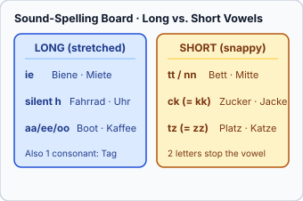
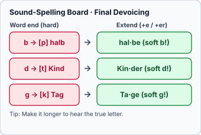

Medienübersicht
Alle Bilder, Audios und Videos dieser App mit ihrer Quelle und ihrer Lizenz.
Bilder

images/umlauts-sz-card.svg© CC0-1.0Verwendet auf: Umlaute und Diphthonge

images/vowel-length-signals.svg© CC0-1.0Verwendet auf: Lange und kurze Vokale

images/final-devoicing-diagram.svg© CC0-1.0Verwendet auf: Auslautverhärtung: Tag klingt wie Tak

images/prefix-stress-diagram.svg© CC0-1.0Verwendet auf: Betonung bei Verbpräfixen

images/ss-sz-rule-card.svg© CC0-1.0Verwendet auf: Schreibung von s, ss und ß

images/b1-comma-signals.svg© CC0-1.0Verwendet auf: Kommas bei Relativ- und Infinitivsätzen